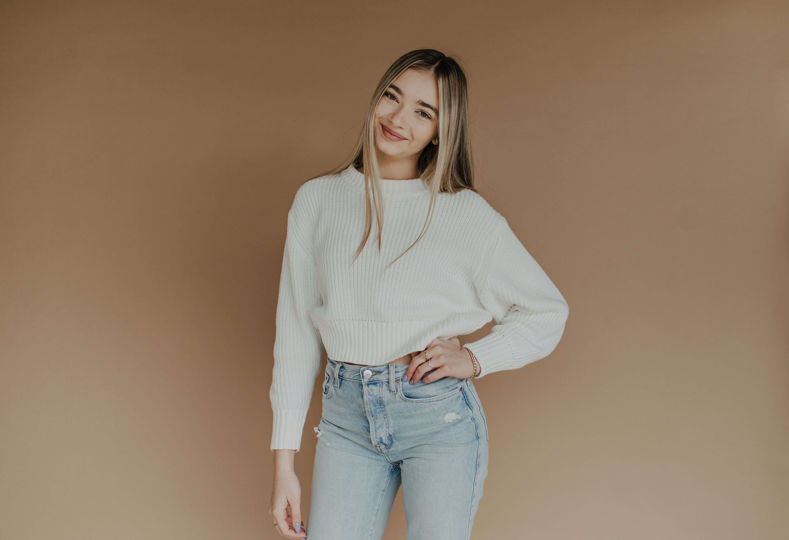

About Me
Hi! I am Sierra Beaulieu, and I wanted to let you know a little bit about me. I am currently a student at LSU studying photography and graphic design. While in school, I am trying to start up Sierra Beaulieu Photography, so I can jump right into a full-time photography business right after graduation. Some fun facts about me are...
1. I just turned 21.
2. I am getting a goldendoodle puppy this summer, and his name will be Mowgli aka Mo.
3. I love road trips with my parents in the West!
4. National Parks are my fav!
5. I am from New Orleans, LA.
6. I am the youngest in my family.
6. My goal is to visit all 50 states.
7.I am a LSU Athletic Photographer.
8. My favorite color is pink!
9.I love to read.
10. My favorite TV show is New Girl.
Now that you know about me, I want to know about you! Conact me so we can get to know each other and we can get your sessions booked!!